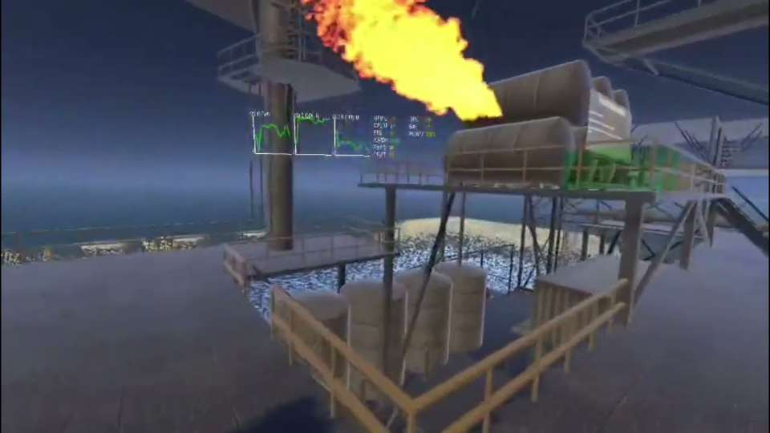

VR Offshore Simulator
An immersive offshore safety-training simulation built around equipment preparation, a timed tank-leak response and an emergency evacuation scenario.
Training flow
Players begin by equipping safety gear and checking their avatar in a mirror. In the emergency scenario, they locate a tank leak, shut off the valve on a lower level, weld the damaged area, reopen the valve and check that the leak has stopped. If the response deadline is missed, an explosion triggers an evacuation to the emergency boat.
My contribution
As the main developer, I built the gameplay mechanics, interactions and visual effects, and integrated the character-rig inverse kinematics. I implemented body tracking so the avatar's hands follow the player's movements; the legs animate with locomotion rather than being tracked directly.
